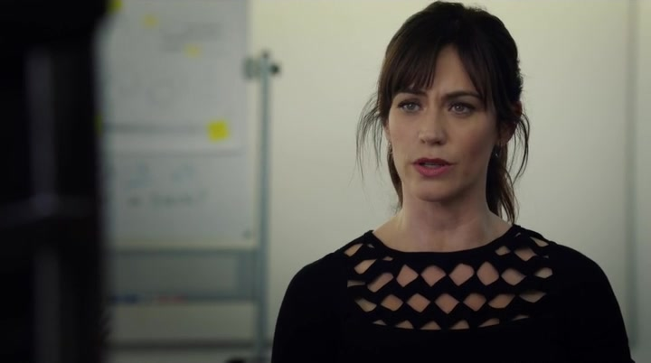
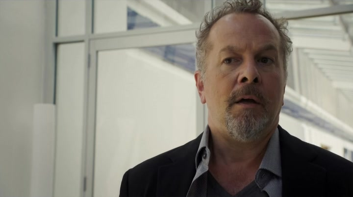

09Farpoint · 温迪向海德克交付意见
她交出结论，也拒绝继续只交结论

本集截图：温迪交付对候选人的否定意见，也拒绝继续只做筛选者。剧情事实温迪认为埃莱娜适合研究，却尚不适合任务：缺少真实逆境经验，风险在于遇到意外可能无法承受。她建议先拒绝并观察对方是否持续回来接受测试。交付这份判断后，她拒绝继续任筛选者，表示自己更喜欢参与人的改变，而非只把人分进不同类别。[1][2]
这一场为什么重要 · 个人解读
关于任务适配的结论是温迪的专业意见，剧中没有实际失事来验证。她对工作的选择则是清楚的行动：愿意承受关系中的混乱，帮助人改变，而不是保持安全距离替机构盖章。这没有自动把她送回旧公司，却解释了为什么接下来的真实求助仍会对她有吸引力。
因此 → 温迪保留独立选择，不承诺继续为Farpoint评估下一位候选人。
10Axe Capital · 布鲁诺引荐的会面
一个人情带进门，赌场才让交易留下
本集截图：赌场计划让阿克斯重新注意到一项濒临违约地区的债务投资。剧情事实布鲁诺带侄子马可来向阿克斯介绍桑迪科特地区的困境债务与重建机会。阿克斯指出该地濒临违约，常规地产叙事不足以吸引自己；马可提到预期赌场计划才改变会面。阿克斯交泰勒核实与奥尔巴尼之间的牌照关系，不愿凭猜测投入资金。[1][2]
这一场为什么重要 · 个人解读
人情能使提案得到一次倾听，不能替代可计算的收益。赌场设想改变了债务与城市重建的想象空间，最关键的审批信息却还没有确认。阿克斯把这种可能同时有利于自己与当地的投入说成更能认同的给予，和先为形象筹划慈善的做法形成鲜明对应。
因此 → 团队开始核实博彩牌照渠道；本集没有展示牌照获批或债务投资已经完成。
11Axe Capital → 温迪诊室 / 河边会面
求助需要预约，留下需要自己选择

本集截图：瓦格斯无法坐下，说明自己醒来后才发现不记得如何纹上的刺青。剧情事实瓦格斯醒来才发现刺青，不记得如何发生，阿克斯把他送去温迪处。他承认真的需要帮助，她答应按正式预约接待。稍后布莱恩在戴克面前要求用证据证明指控，拒绝以抛弃查克换安全；此前麦金农报告操作恢复，也让他重新认可上司的方法。[1][2]
这一场为什么重要 · 个人解读
两名下属都在寻找可以依靠的关系，所作承诺却不同。瓦格斯终于不只把失控包装成笑话，温迪愿意帮但不恢复随叫随到。布莱恩以要求证明维护自己的选择，也把查克的办案能力作为留下的理由。恢复信心与事实证明仍不是同一回事，旧指认没有因此获得或失去证实。
因此 → 温迪的旧专业联系以新边界延续，布莱恩重新公开选择查克一边。
12Axe Capital · 口头取证与休息电话
被羞辱以后，他更不愿听律师的话
 本集截图：正式口头取证时，阿克斯以轻蔑姿态面对对方，律师仍在试图控制风险。
本集截图：正式口头取证时，阿克斯以轻蔑姿态面对对方，律师仍在试图控制风险。剧情事实艾拉询问损害时，阿克斯不肯公开账本，被逼回答是否在主张精神或情绪损害而要求暂停。休息中本辛格斥责他利用慈善，并告知NFL拒绝竞购，称他不是被接纳的贵族。阿克斯回到桌前，把失去球队归因查克，拒绝巴赫再休息的建议，坚持继续记录。[1][2]
这一场为什么重要 · 个人解读
开场预演教他在受触动时停下，他确实一度暂停，却因随后的羞辱更急于证明自己没有受伤。失去球队成为他新提出的金钱损害主张，不等于法律上已经成立的因果或赔偿。律师的谨慎与老板的自我判断在最后分开；誓言没有换来接纳，愤怒却重新获得进攻目标。
因此 → 本集止于取证继续，NFL机会已被拒绝，诉讼中这项新主张尚未获裁定。